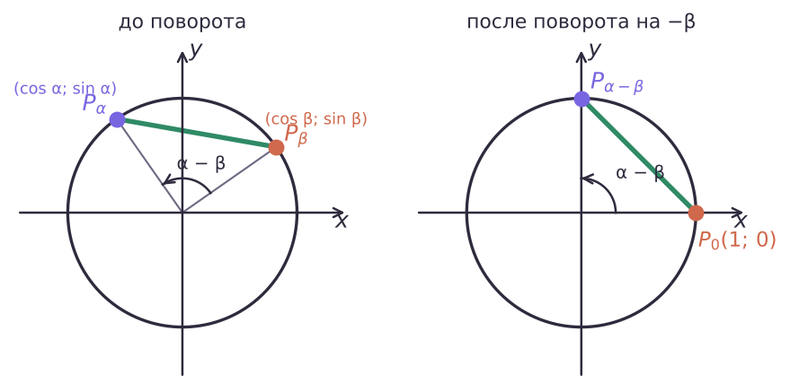
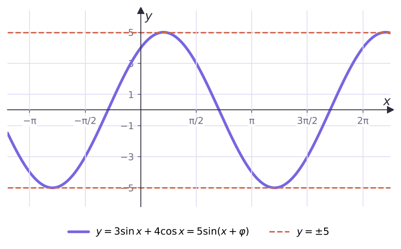

Теория
Мы знаем значения тригонометрических функций для углов 30°, 45°, 60°. А чему равен cos 15° или sin 75°? Заметим: 15° = 45° − 30°, 75° = 45° + 30°. Нужны формулы, которые выражают функции суммы и разности углов через функции самих углов. Их называют формулами сложения.
Сразу о главной ловушке: cos(α − β) ≠ cos α − cos β и sin(α + β) ≠ sin α + sin β. Проверка: sin(π2 + π2) = sin π = 0, а sin π2 + sin π2 = 2.
Косинус разности
Для любых α и β: cos(α − β) = cos α cos β + sin α sin β.
Отметим на единичной окружности точки Pα(cos α; sin α) и Pβ(cos β; sin β). По формуле расстояния между точками:
PαPβ² = (cos α − cos β)² + (sin α − sin β)² = (cos²α + sin²α) + (cos²β + sin²β) − 2(cos α cos β + sin α sin β) = 2 − 2(cos α cos β + sin α sin β).
Повернём обе точки вокруг O на угол −β. Точка Pβ перейдёт в P0(1; 0), а Pα — в точку Pα−β(cos(α − β); sin(α − β)). Поворот сохраняет расстояния, поэтому
PαPβ² = (cos(α − β) − 1)² + sin²(α − β) = cos²(α − β) + sin²(α − β) − 2cos(α − β) + 1 = 2 − 2cos(α − β).
Приравниваем: 2 − 2cos(α − β) = 2 − 2(cos α cos β + sin α sin β), откуда и следует формула. Мы нигде не требовали, чтобы углы были острыми, — формула верна при любых α и β.

Остальные формулы — следствия
Косинус суммы. Заменим β на −β и вспомним чётность: cos(−β) = cos β, sin(−β) = −sin β:
cos(α + β) = cos α cos β − sin α sin β.
Два полезных равенства. Положим в теореме 24.1 α = π2: cos(π2 − β) = 0 · cos β + 1 · sin β = sin β. Заменив здесь β на π2 − β, получим sin(π2 − β) = cos β. Итак, cos(π2 − β) = sin β, sin(π2 − β) = cos β при любом β.
Синус суммы. sin(α + β) = cos(π2 − (α + β)) = cos((π2 − α) − β) = cos(π2 − α) cos β + sin(π2 − α) sin β:
sin(α + β) = sin α cos β + cos α sin β;
sin(α − β) = sin α cos β − cos α sin β (замена β на −β).
Тангенс суммы. tg(α + β) = sin(α + β)cos(α + β). Разделим числитель и знаменатель на cos α cos β ≠ 0:
tg(α + β) = tg α + tg β1 − tg α tg β, tg(α − β) = tg α − tg β1 + tg α tg β.
Они верны, когда определены tg α, tg β и tg(α ± β).
| Функция | суммы α + β | разности α − β |
|---|---|---|
| cos | cos α cos β − sin α sin β | cos α cos β + sin α sin β |
| sin | sin α cos β + cos α sin β | sin α cos β − cos α sin β |
| tg | tg α + tg β1 − tg α tg β | tg α − tg β1 + tg α tg β |
В формуле косинуса знак противоположный: у косинуса суммы минус, у косинуса разности — плюс. У синуса знак совпадает со знаком между углами.
Вспомогательный угол
Выражение a sin x + b cos x можно «свернуть» в один синус. Вынесем √a² + b²:
a sin x + b cos x = √a² + b² · (a/√a² + b² · sin x + b/√a² + b² · cos x).
Сумма квадратов коэффициентов в скобках равна 1, значит, найдётся угол φ, для которого они равны cos φ и sin φ. По формуле синуса суммы получаем a sin x + b cos x = √a² + b² · sin(x + φ). Отсюда область значений: [−√a² + b²; √a² + b²].

Разбор примеров
Вычисли: а) sin 105°; б) tg 75°.
а) sin 105° = sin(60° + 45°) = sin 60° cos 45° + cos 60° sin 45° = (√32)(√22) + (12)(√22) = (√6 + √2)/4.
б) tg 75° = tg(45° + 30°) = 1 + √331 − √33 = 3 + √33 − √3 = (3 + √3)²9 − 3 = 12 + 6√36 = 2 + √3.
Вычисли: а) sin 47° cos 13° + cos 47° sin 13°; б) cos(5π12) cos(π12) + sin(5π12) sin(π12); в) tg 25° + tg 20°1 − tg 25° tg 20°.
а) Это синус суммы: sin(47° + 13°) = sin 60° = √3/2.
б) Косинус разности: cos(5π12 − π12) = cos(π3) = 1/2.
в) Тангенс суммы: tg(25° + 20°) = tg 45° = 1.
sin α = 45, π2 < α < π; cos β = 513, 3π2 < β < 2π. Найди sin(α + β) и cos(α − β).
Сначала недостающие функции (§ 23): cos α = −35 (II четверть), sin β = −1213 (IV четверть).
sin(α + β) = sin α cos β + cos α sin β = (45)(513) + (−35)(−1213) = 2065 + 3665 = 56/65.
cos(α − β) = cos α cos β + sin α sin β = −1565 − 4865 = −63/65.
Докажи, что sin(α + β) sin(α − β) = sin²α − sin²β.
(sin α cos β + cos α sin β)(sin α cos β − cos α sin β) = sin²α cos²β − cos²α sin²β = sin²α(1 − sin²β) − (1 − sin²α) sin²β = sin²α − sin²α sin²β − sin²β + sin²α sin²β = sin²α − sin²β.
α и β — острые углы, tg α = 12, tg β = 13. Найди α + β.
tg(α + β) = 12 + 131 − 16 = 5656 = 1. Так как 0 < α + β < π, а на (0; π) тангенс равен 1 только в точке π4, то α + β = π/4.
Найди область значений функции y = 3 sin x + 4 cos x.
√3² + 4² = 5: y = 5((35) sin x + (45) cos x) = 5 sin(x + φ), где cos φ = 35, sin φ = 45. Синус пробегает [−1; 1], значит, E(y) = [−5; 5].
Задачи урока
Реши в тетради. Ответы разберём на занятии.
Тест к уроку
Домашнее задание
Задачи Д1–Д6 ниже. Выписать в тетрадь шесть формул сложения и вывести cos(α + β) и sin(α + β) из формулы косинуса разности; помнить, что у косинуса знак между слагаемыми противоположный.